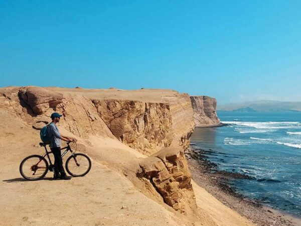

Circuito de la Reserva Nacional de Paracas: cómo recorrerla en moto, bicicleta o caminando

La Reserva Nacional de Paracas tiene un circuito costero de miradores y playas que puedes recorrer por tu cuenta: en scooter o moto lineal, en bicicleta o incluso caminando entre puntos cercanos. Aquí te dejamos el mapa exacto con todas las paradas y los consejos para hacerlo con seguridad.
¿Por qué recorrer la reserva por tu cuenta?
Este circuito es ideal para viajeros independientes, mochileros y agencias que quieren mostrarle a sus clientes una ruta autoguiada, sin depender de un tour cerrado. Todo el desierto costero está bien señalizado, el acceso es por la Garita de Control de la Reserva y desde ahí el circuito se recorre en un solo sentido, parando en cada mirador.
Las 3 formas de recorrer el circuito
1. En scooter o moto lineal
Es la forma más popular entre los viajeros que se hospedan en Paracas. Se puede alquilar una moto lineal o scooter en el pueblo y recorrer los +30 km del circuito en 2 a 3 horas con paradas fotográficas.
- Ideal para: quienes quieren libertad total de horarios y no dependen de un grupo.
- Ten en cuenta: lleva casco, combustible suficiente (no hay grifos dentro de la reserva) y protector solar.
- Tramos con arena suelta: maneja con cuidado cerca de los miradores, sobre todo en Playa Roja y Lagunillas.
2. En bicicleta

La carretera del circuito es de asfalto y trocha compacta, perfecta para bicicleta de montaña o gravel. Es un recorrido exigente por el sol y el viento, pero muy gratificante.
- Mejor horario: muy temprano en la mañana, antes de que suba la temperatura y arrecie el viento.
- Lleva: mínimo 2 litros de agua por persona, ya que no hay tiendas dentro de la reserva.
- Distancia: se puede acortar el recorrido visitando solo los miradores más cercanos a la Garita de Control.
3. Caminando

Si no cuentas con vehículo, puedes caminar entre los puntos más cercanos a la Garita de Control, como el Yacimiento Fósil y algunos miradores cercanos a la orilla. Para el circuito completo, caminar no es recomendable por las distancias entre playas.
- Ideal para: quienes se quedan en los tramos cercanos a la entrada o combinan caminata con transporte para el resto del circuito.
- Lleva: agua, gorro y calzado cómodo para arena.
Mapa y paradas del circuito
Este es el mapa completo con todas las paradas del circuito, en el orden en que se visitan desde la Garita de Control:
- Garita de Control de la Reserva Nacional de Paracas — ingreso y pago de entrada.
- Yacimiento Fósil — restos marinos fosilizados a pocos minutos del ingreso.
- Mirador Playa Supay y Mirador de la Playa Supay — vistas sobre esta playa escondida.
- La Catedral (Viewpoint) — la formación rocosa más icónica de la reserva.
- Playa Yumaque — una de las playas más visitadas del circuito.
- Mirador Istmo y Mirador Istmo II — miradores sobre la franja de tierra que separa el mar de la bahía.
- Mirador Playa Roja — vistas de la famosa playa de arena roja.
- Playa La Mina — parada clásica para descansar y nadar.
- Lagunillas — caleta de pescadores donde puedes comer mariscos frescos al final del recorrido.
Consejos prácticos antes de entrar
- Entrada: se paga en la Garita de Control al ingresar (efectivo).
- Combustible y agua: abastécete antes de entrar, dentro de la reserva no hay grifos ni tiendas.
- Protección solar: el sol del desierto costero es muy fuerte incluso en días nublados.
- Respeta la fauna y flora: es un área natural protegida, no te salgas de las vías señalizadas.
- Señal de celular: es limitada en varios tramos, descarga el mapa antes de entrar por si necesitas usarlo sin conexión.
¿Prefieres ir con un guía certificado?
En SolyMar Paracas también organizamos el recorrido completo por la Reserva Nacional de Paracas con transporte y guía incluidos.
RESERVAR AHORATambién te puede interesar: Tour a la Reserva Nacional de Paracas o ver más sobre el blog.